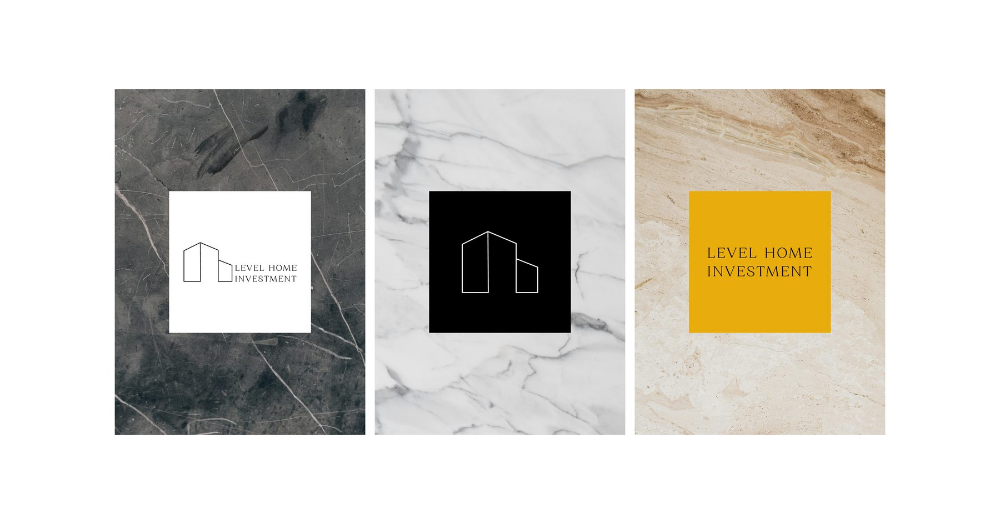
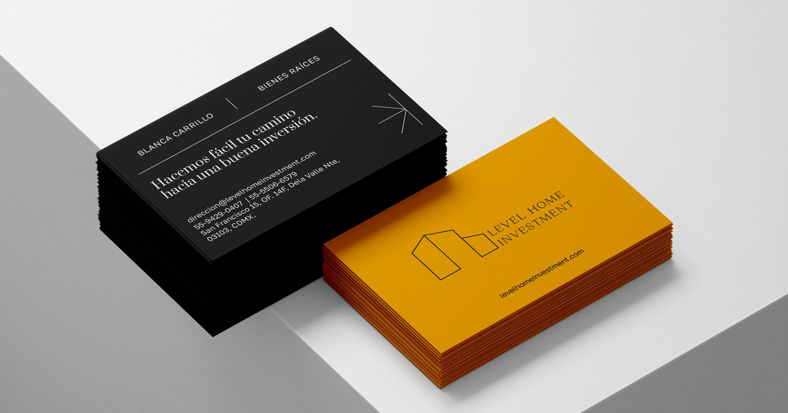
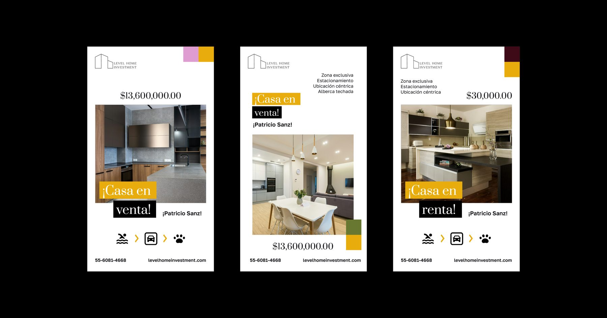
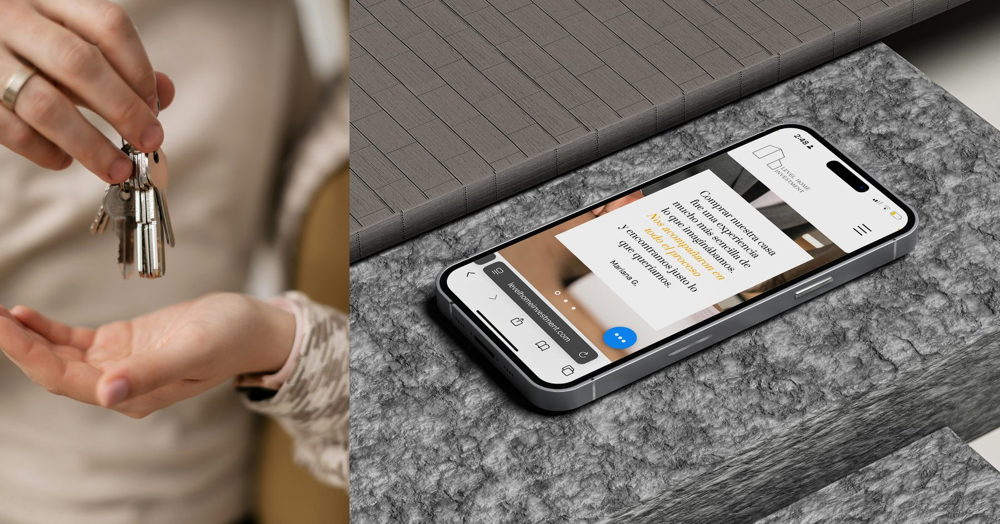
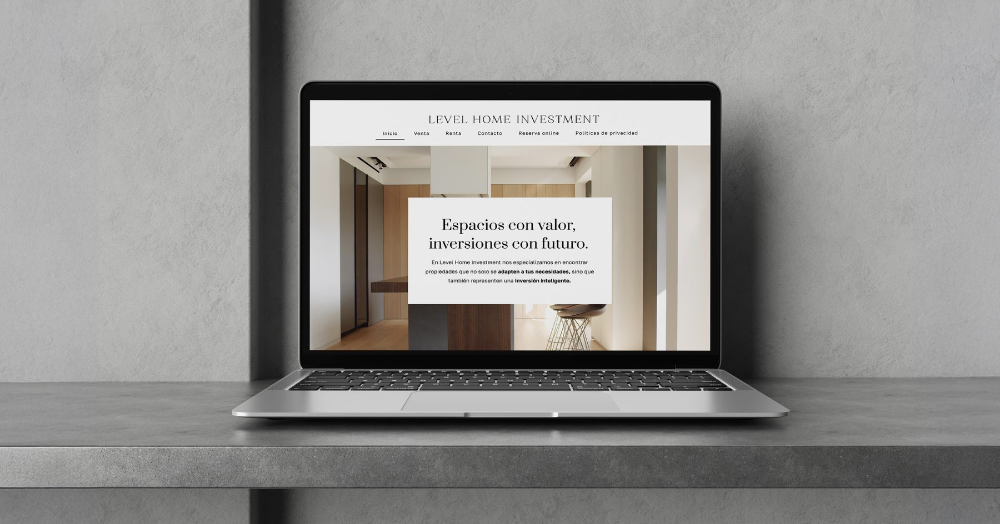

Level Home Investment was building its real estate business and needed a presence that reflected its ambitions — professional, credible, and built to grow. The project focused on developing a website that would elevate the brand's image and support client acquisition.
The design approach prioritized clarity and confidence: a clean, structured layout that communicates reliability and expertise at every touchpoint. Visual decisions were made with the end client in mind — someone evaluating a significant investment who needs to trust the people behind it. The result is a digital presence that positions Level Home Investment as a serious, established player ready to scale.




